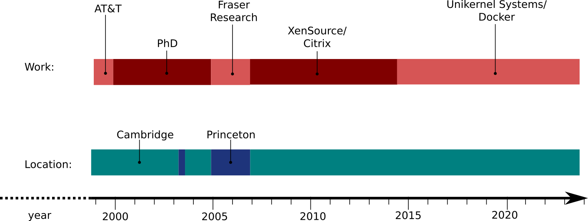

I work for Docker on the Docker for Mac and Windows project. Previously I worked for Citrix, making virtualisation products based on the open source Xen hypervisor. Before Citrix I was a consultant research scientist at Fraser Research. Earlier still I finished a PhD in the University of Cambridge Computer Laboratory and I was co-founder of High Energy Magic, a company which produced mobile phone software to recognise printed visual symbols, known as SpotCodes.
View LinkedIn profile View GitHub profile Follow on twitter
Work address